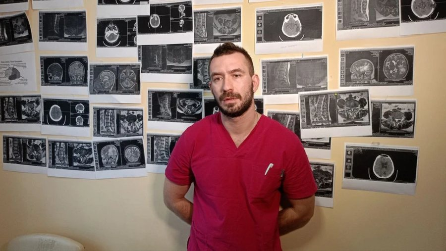
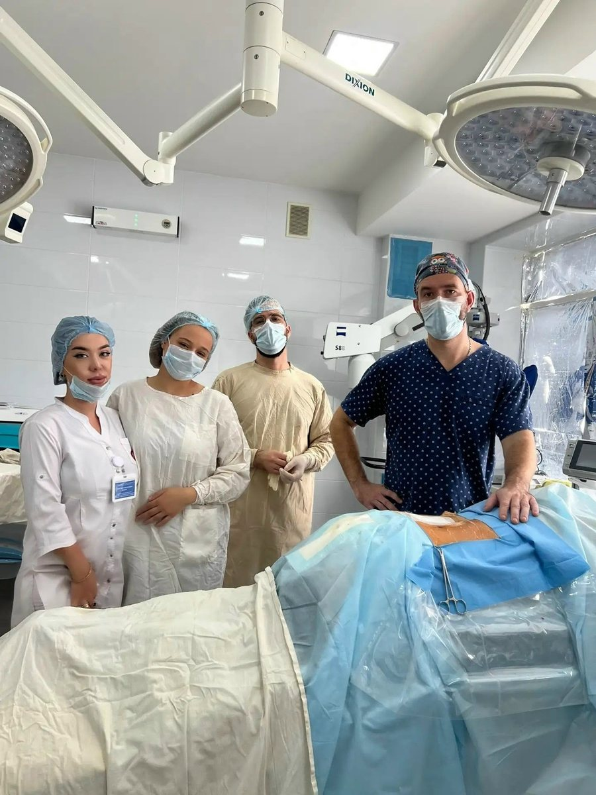
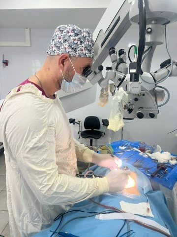
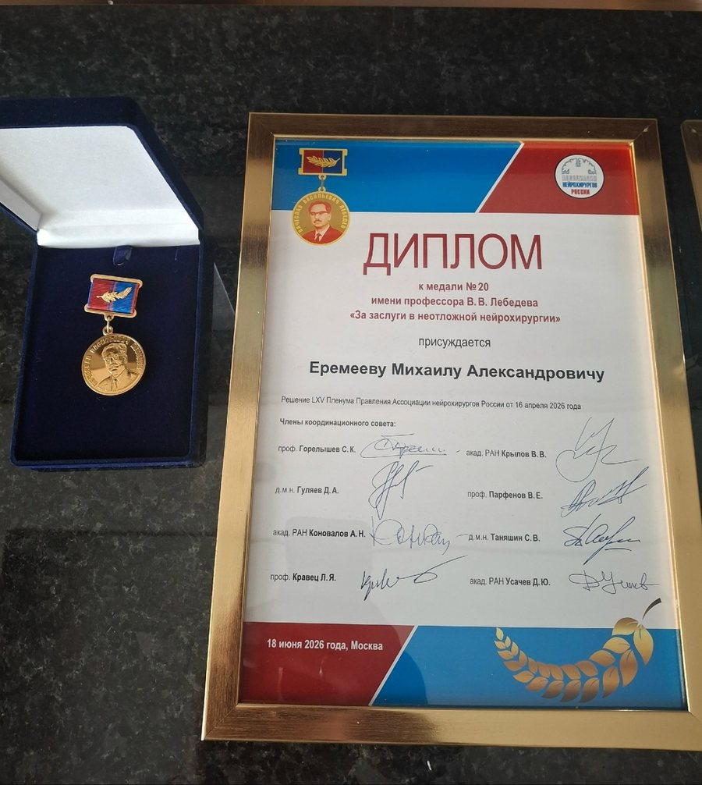

Консультирую при болезнях и травмах позвоночника, спинного и головного мозга. Приходите со снимками МРТ или КТ и выпиской: на приёме разберём, что на них видно, нужна ли операция и какие есть варианты.
Найдите свой случай по симптомам. Если ничего не подходит, всё равно запишитесь: направление определяет врач после осмотра.
Грыжа диска и болезни позвоночника
Что беспокоит: боль в пояснице или шее, отдающая в ногу или руку, онемение, слабость в конечности.
Если лечение без операции не помогло или появилась слабость в ноге, обсуждаем операцию, в том числе малоинвазивную. По снимкам определим, нужна ли она именно вам.
Опухоли головного и спинного мозга
Что беспокоит: постоянная головная боль, нарушения зрения или речи, судороги, слабость или онемение в конечностях, или на МРТ нашли образование.
Оперирую доброкачественные и злокачественные опухоли. Разберём снимки, объясню, что за образование, какие есть варианты и какие риски у каждого.
Травмы позвоночника и спинного мозга
Что беспокоит: боль и ограничение движений после падения или аварии, неустойчивость в спине, снижение силы или чувствительности.
Оцениваем стабильность перелома: нужен ли корсет и покой или требуется операция по фиксации позвоночника и освобождению спинного мозга.
Сосудистые заболевания головного мозга
Что беспокоит: приступы сильной головной боли, нарушения речи или зрения, или на МРТ или КТ нашли аневризму или другую сосудистую патологию.
Разбираем снимки и решаем, достаточно ли наблюдения или нужна операция. Если симптомы начались внезапно, не ждите приёма, вызывайте скорую помощь.
Черепно-мозговая травма
Что беспокоит: после удара головой потеря сознания, рвота, нарастающая головная боль, сонливость.
При таких признаках сразу вызывайте скорую. На консультации после травмы смотрим снимки и решаем, нужно ли наблюдение или операция.
Сдавление нервов (туннельные нейропатии)
Что беспокоит: онемение и покалывание в пальцах, слабость кисти, боль, которая усиливается ночью.
Подтверждаем причину по осмотру и обследованию и обсуждаем, помогает ли лечение без операции или нужна операция по освобождению нерва.
Как проходит консультация
Запись
Позвоните и запишитесь на приём. Диагноз и жалобы по телефону подробно пересказывать не нужно: всё разберём на приёме.
Осмотр и разбор снимков
Неврологический осмотр, затем вместе смотрим МРТ или КТ. Я показываю, что на них видно, простыми словами.
Заключение
Есть ли показания к операции, какие существуют варианты, чем рискует каждый из них и чем рискует отказ от лечения.
План действий
Наблюдение, лечение без операции или операция. Если нужны дополнительные обследования, дам их перечень.

Здесь будет фотоphoto-2.jpg

photo-3.jpg

photo-4.jpg
О враче
Еремеев Михаил Александрович – нейрохирург, заведующий нейрохирургическим отделением Мелитопольской областной больницы и главный внештатный нейрохирург Минздрава Запорожской области. Работает с заболеваниями и травмами позвоночника, спинного и головного мозга и периферических нервов, применяет открытые и малоинвазивные методики.
Много лет работал в Санкт-Петербурге, в 2023 году переехал в Мелитополь, чтобы создать нейрохирургическое отделение областной больницы.
Образование
Южно-Уральский государственный медицинский университет, лечебное дело, 2015 год
Интернатура и ординатура
Интернатура по хирургии, 2016 год. Ординатура по нейрохирургии в НМИЦ имени В. А. Алмазова, 2018 год. Циклы переподготовки по нейрохирургии в ЮУГМУ
Работа
Санкт-Петербург, Городская больница № 26: отделение платных услуг и 1-е нейрохирургическое отделение. С 2023 года – Мелитополь
Опыт операций
Около 500 операций за два с половиной года работы в Мелитополе, в основном на позвоночнике и при опухолях головного мозга
Награды
Медаль № 20 имени профессора В. В. Лебедева «За заслуги в неотложной нейрохирургии», Ассоциация нейрохирургов России, 2026 год
Патенты
«Способ декомпрессии спинного мозга при переломах грудных и поясничных позвонков», патент РФ № 2798042 (2023). Способ репозиции позвоночника при переломах, патент РФ № 2753133 (2021)
Членство
Ассоциация нейрохирургов Санкт-Петербурга

Диплом Ассоциации нейрохирургов России, решение пленума от 16 апреля 2026 года
Частые вопросы
Всегда ли при грыже диска нужна операция?
Нет. Многим пациентам помогает лечение без операции. К операции переходят, когда боль не уходит несмотря на лечение или появляются неврологические нарушения: слабость в ноге, нарушение мочеиспускания.
Решение принимается после осмотра и изучения снимков, а не по описанию по телефону.
Когда нельзя ждать плановой консультации?
Вызывайте скорую помощь, если внезапно:
появилась слабость или онемение в руке или ноге, нарушилась речь или зрение, возникла сильнейшая головная боль, начались судороги, пропал контроль над мочеиспусканием или стулом, или появилось онемение в промежности.
Какие снимки нужны на приём?
Лучше всего снимки на диске вместе с описанием: МРТ или КТ нужного отдела позвоночника или головного мозга. Если снимков нет, врач скажет, какое исследование нужно сделать.
Как готовиться к операции?
Перечень обследований зависит от вида операции. Его даёт врач после консультации, заранее собирать анализы не нужно.
Сколько длится восстановление?
Срок зависит от заболевания, вида операции и состояния пациента. Врач объясняет примерный план восстановления после осмотра, когда ясно, что именно предстоит.